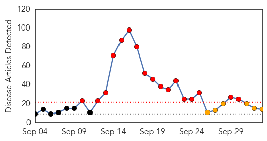

30 Day Trends
Web: 17 alerts, 6 warnings
Twitter: 0 alerts, 0 warnings
Top Articles:
- 0.994
- Stop dengue by weeding out mosquitoes’ breeding grounds
- 0.994
- The dengue sting needs an out-of-the-box cure
- 0.969
- More people, urbanisation 'behind rise in dengue cases', news, Health News, AsiaOne YourHealth
- 0.962
- Dengue still spreading in Cavite; 5 more die
- 0.954
- No Zika Virus in Jamaica
- 0.944
- Delhi govt notices to 14 doctors; toll 37
- 0.938
- Dengue crisis: Delhi govt issues show-cause notices to 14 doctors
- 0.926
- No Zika virus in Jamaica — Ferguson
- 0.916
- Dengue outbreak feared as 39 cases reported in Multan
- 0.900
- On the rise: Dengue claims second life in Rawalpindi
- 0.875
- DOH-CAR calls for community actions vs Dengue as cases reach alarming level
- 0.747
- Dengue claims another life
- 0.693
- Dengue cases: Chandigarh invokes Epidemic Diseases Act, challans private lab owner
- 0.617
- CM orders speedy eradication of dengue from Punjab
Top Tweets:
-
No tweets found for Oct 03, 2015
Web/News Articles
Tweets

Article Locations